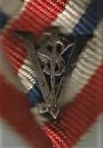
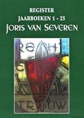
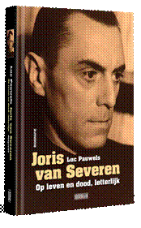
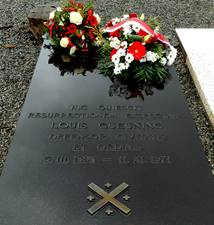

> nieuwsbrief > 2022- nr 1
Inhoud

Kaftillustratie:
JvS-monogram onderaan, vermoedelijk, het draaglint van het
Ordekruis van de door Louis Gueuning gestichtte Ordo Joris van Severen.
Kan iemand uit onze lezerskring hieromtrent nadere
inlichtingen verschaffen?
Mededelingen
Hernieuwen ledenbijdrage
voor 2022
De jaarwisseling nadert met rasse schreden – en meteen
ook het tijdstip voor het hernieuwen van de bijdragen voor 2022.
Dankzij een zuinig beheer blijft het ons mogelijk om,
niettegenstaande alweer gestegen druk- en portkosten, de
minimumbijdrage te behouden op 29 €. In ruil daarvoor verzekeren
we u de stipte toezending van het nieuwe Jaarboek
Joris van Severen – het 26e al – in de
meimaand en van de vier nummers van ons kwartaalblad Nieuwsbrief
Joris van Severen. Vanaf het bedrag
van 35 € boeken we u met dank als steunend lid. Vereffening
graag via onze rekening IBAN: BE71 0001 7058 1469 – BIC:
BPOTBEB1 t.n.v. Studiecentrum Joris van Severen,
Paddevijverstraat 2, 8900 Ieper.
Namenregister
over de jaarboeken 1 - 25
Samen met het 25e Jaarboek
Joris van Severen realiseerden we in
2021 ook de uitgave van een uitgebreid Register (120 pagina’s) van
alle persoonsnamen die in de jaarboekenreeks 1 tot en met 25
terug te vinden zijn. Dit Register werd – zonder
meerprijs - als bijlage bij het Jaarboek 25 (2021) aan alle
leden toegestuurd. Vanaf heden beloopt de kostprijs voor dit Register 10 €., desgevallend
te vereffenen bovenop de ledenbijdrage voor 2022.
Op weg naar een fusie: het Joris van
Severen Instituut
 Naar
aanleiding van de Algemene Vergadering 2021 van het Studiecentrum
Joris van Severen – vzw werd gepleit voor een samengaan
met de Stichting Joris van Severen vzw, die al sinds
jaren instaat voor het organiseren van de
herdenkingsplechtigheden te Brugge en te Abbeville en het
onderhoud van het grafmonument aldaar.
Naar
aanleiding van de Algemene Vergadering 2021 van het Studiecentrum
Joris van Severen – vzw werd gepleit voor een samengaan
met de Stichting Joris van Severen vzw, die al sinds
jaren instaat voor het organiseren van de
herdenkingsplechtigheden te Brugge en te Abbeville en het
onderhoud van het grafmonument aldaar.
Embleem van het Joris van Severen Instituut
Tijdens
de voorbije maanden werden daartoe meerdere gesprekken gevoerd
teneinde tot een fusieakkoord tussen beide vzw’s te komen dat in
de loop van 2022 in werking zou treden onder de naam Joris van Severen Instituut -
vzw. Voor het lidmaatschap van beide vzw’s zal dit geen
gevolgen hebben: met het ingaan van de fusie wordt het
lidmaatschap automatisch omgezet tot het lidmaatschap van het Joris
van Severen Instituut. Dit houdt in dat de leden, als
voorheen, kunnen rekenen op toezending van het Jaarboek
Joris van Severen – het 26e al - in de loop van
de meimaand en de om het kwartaal verschijnende Nieuwsbrief
Joris van Severen.
Archief
en foto’s Verdinaso en Dietse Militanten Orde
Uiteraard
beschikken we binnen het Studiecentrum Joris van Severen al over
talrijke foto’s en ander archiefmaterieel, het zij in origineel,
kopie of gedigitaliseerd.
Maar
ongetwijfeld berusten er nog tal van zulke stukken
archiefstukken en foto’s bij oud-Dinaso’s en hun erfgenamen.
Veel daarvan dreigt mettertijd helaas spoorloos te verdwijnen.
Zaak is het veilig te stellen!
Bij
deze doen we een oproep aan hun adres om hun dergelijk materiaal
af te staan aan het Studiecentrum Joris van Severen. Desgewenst
willen we dit archiefmateriaal kopiëren en de foto’s
digitaliseren en hen de originelen achteraf gegarandeerd terug
bezorgen.
Joris van Severen. Op leven en
dood, letterlijk’ door Luc Pauwels
Wim de Winter
Nieuwe informatie
Laten we beginnen
met een cliché zo hoog als de kathedraal van Antwerpen: geen
enkele Vlaamse politieke voorman deed zoveel inkt vloeien als
Joris van Severen (1894-1940). Van het bekende ‘Droom en daad’
van Arthur De Bruyne over ‘Une âme’ van Van Severens laatste
minnares Rachel Baes tot de volledige reeks jaarboeken van het
Studiecentrum Joris van Severen (25 delen ondertussen): het is
genoeg om een halve boekenkast mee te vullen. Was nu nog niet
alles gezegd en geschreven over de Dinaso-leider? Neen, want
biograaf en rasverteller Luc Pauwels weet ook nieuwe informatie
te brengen in zijn boek: ‘Joris van Severen. Op leven en dood,
letterlijk’.
Magnetische
aantrekkingskracht
Vooral de
amoureuze escapades van Joris van Severen vormen een blikvanger
in dit boek. Van Severen stond in zijn tijd bekend als een
rokkenjager die de ene na de andere vrouw verslond. De waarheid
is lichtjes anders: hij ging niet achter de vrouwen aan, de
dames kwamen bij bosjes naar hem toe. Van nature was Van Severen
een schuchter man en eerder onhandig in het versieren van
vrouwelijk schoon, maar hij had nu eenmaal een magnetische
aantrekkingskracht op de andere sekse. Dat verklaart misschien
waarom de zeer katholieke (maar niet kerkelijke) Van Severen
niet tot huwen kwam: hij kon niet kiezen. Dàt en zijn rigide
beeld van de ideale vrouw.
Sympathie voor
het bolsjewisme
Maar laten we het
frivole voor wat het is: Luc Pauwels weet ook één voor één de
vooroordelen over Van Severen vakkundig te ontkrachten. Was Van
Severen een franskiljon? Neen. Was hij een belgicist? Neen. Was
hij een fascist? Neen. Wel bleek hij tijdens zijn dienstjaren
aan het IJzerfront een vurige bewonderaar van het bolsjewisme,
dat in Rusland met Lenin en Trotski aan de macht kwam. Weinig
verwonderlijk: de arme drommels die vier jaar lang ploeterden in
het slijk van de IJzervlakte en die de voortdurende dreiging van
dood en verderf ondergingen waren de oorlog beu. Ze waren niet
alleen het slachtoffer van krijgslustige generaals en laffe
politici, maar ook van bankiers, staalbaronnen en
wapenfabrikanten die zich zonder scrupules verrijkten over de
rug van de onfortuinlijke piotten. Men zou voor minder beginnen
dromen van een revolutie, zelfs van een communistische. Deze
jongens wisten natuurlijk nog niets van de gruwelen die gepaard
gingen met het bolsjewistische bewind. Ook Van Severen kon dat
niet weten. Niet lang na de oorlog nam hij afstand van het
bolsjewisme. Lenins concept van de kaderpartij hield hij wel nog
lange tijd aan.
Antisemitisme?
Eén van de
vooroordelen over Joris van Severen gaat over het echte of
vermeende antisemitisme van zijn organisatie, het Verdinaso
(Verbond van Dietse Nationaal Solidaristen). Luc Pauwels
behandelt slechts kort dit onderwerp. Ja, er verschenen wel eens
antisemitische stukjes in de Dinaso-pers, maar de auteurs werden
uiteindelijk aan de deur gezet wegens onhandelbaar of verdwenen
vanzelf uit het Verdinaso. De verschillende brochures met het
algemene programma van het Verdinaso reppen overigens met geen
woord over de Joden en ook bij Van Severen zelf valt er weinig
over te vinden, zelfs niet in zijn dagboeken. Rekening houdende
met de tijdsgeest kwam het thema nauwelijks aan bod binnen het
Verdinaso. Wel wenste het Verdinaso dat de integriteit van het
volk der Nederlanden niet werd aangetast door vreemdelingen.
Dat weerhoudt een
journalist zoals Walter Pauli van het weekblad ‘Knack’ er niet
van om het Verdinaso mordicus te beschuldigen van antisemitisme.
Hij verwijt Luc Pauwels daar niet op in te zoomen. Deze laatste
maakt er geen gewag van in zijn boek, maar op de officiële
boekvoorstelling in Gent schudde Luc Pauwels een leuke anekdote
uit zijn mouw: de vader van het Belgische antisemitisme is de
Waalse socialist Edmond Picard, die in 1893 een ‘Synthese d’
antisémitisme’ schreef. Zoom dààr eens op in, Walter! De ‘Knack’
zou op slag pakken interessanter worden!
Coöperatieve
banken
Het
sociaaleconomische vraagstuk daarentegen was wèl een thema dat
regelmatig de nodige aandacht genoot in de Dinaso-pers. De
beurscrash van 1929 mondde uit in een kanjer van een crisis en
daarbovenop deed het faillissement van de socialistische Bank
van de Arbeid in 1934 het spaargeld van vele arbeiders in rook
opgaan, met alle armoede en ellende van dien. Om dit soort van
onheil voortaan te vermijden stelde Joris van Severen voor om
het economische leven te organiseren volgens beroepen en
bedrijfstakken. De aldus ontstane corporaties moesten beschikken
over eigen banken, met de bedoeling het geld in de eigen
gemeenschap te houden en dus uit de klauwen van anonieme en
vaderlandsloze kapitalisten, of zeg maar de globalisten van
toen. Het idee van coöperatieve banken was beslist niet
origineel: de Duitser Friedrich Wilhelm Raiffeisen richtte in
1864 zo een bank op om de door woekeraars geplaagde boeren van
krediet te voorzien. In België en Nederland kenden we
respectievelijk de Cera- en de Rabobank. Het is kenschetsend
voor Joris van Severen om met dit idee voor de dag te komen. Hij
besefte immers zeer goed dat naast het afbakenen van de eigen
landsgrenzen onafhankelijkheid ook betekent het volledig
beschikken over de uit eigen arbeid gewonnen financiële
middelen.
De ‘hogere
kringen’
Met de oprichting
van het Verdinaso verwijderde Van Severen zich stilaan van het
traditionele Vlaams-nationalisme. Hij verweet de Vlaamse
Beweging geen ‘plan’ te hebben om de macht te veroveren en
hekelde haar ‘spontaneïsme’. Van een ‘volks’ Dietsland-begrip
(Vlaanderen, Nederland en Frans-Vlaanderen) evolueerde hij naar
een zo groot mogelijk herstel van de historische Nederlanden,
wat in de praktijk de stichting van een soort Benelux betekende.
Dit had helemaal niets te maken met opportunisme, wel met
voortschrijdend inzicht. Het huidige gebied dat we Vlaanderen
noemen is eigenlijk een product geboren uit de Belgische
realiteit. Van Severen zag in dat het nutteloos was om tegen
deze realiteit storm te lopen. Beter was het om de macht te
veroveren in België en Nederland om zo de realiteit te
overstijgen.
Deze zienswijze én
zijn conservatieve gedachtegoed wekten de aandacht van een
aantal persoonlijkheden uit de adel, het politieke establishment
én zelfs de nauwe kring rond Leopold III, wiens maag keerde van
het schabouwelijke politieke schouwspel van de jaren ’30.
Diverse vooraanstaande persoonlijkheden traden in verbinding met
het Verdinaso en een deel onder hen werd geheim lid (de lijst
van deze leden nam oud-Dinaso Jef Werkers mee in zijn graf). Via
mantelorganisaties zoals het Verbond voor Nationale
Zelfstandigheid en de Vereniging België-Nederland-Luxemburg
mobiliseerde het Verdinaso de ‘hogere kringen’ voor haar ideaal.
Jammer genoeg gooiden de Duitse inval en de haast mythische dood
van Van Severen roet in het eten. Zou de Dinaso-strategie op
termijn efficiënter zijn geweest dan de zoveelste
partijpolitieke poging van het Vlaams-nationalisme? We zullen
het nooit weten.
‘Je déteste
les hitlériens’
Luc Pauwels’ boek
is echter meer dan een biografie. Regelmatig maakt de auteur
zijsprongetjes om de bredere context te schetsen. Zo biedt hij
de lezer een introductie aan in de Conservatieve Revolutie, een
stroming die zich kantte tegen de ideeën van de Franse Revolutie
en de ideologieën van de maakbaarheid, namelijk het socialisme
en het liberalisme. Van Severen erkende weliswaar bepaalde
verwezenlijkingen van het fascisme en het nationaalsocialisme
(dat deed Winston Churchill ook), maar hij haalde zijn
inspiratie toch vooral bij de jong-conservatief en oud-officier
Arthur Mahraun en zijn beweging, de Jungdeutscher Orden.
Overigens liet Van Severen ooit optekenen dat hij het
nationaalsocialisme verafschuwde (‘Je déteste les
hitlériens’). Die afkeer was wederkerig, zo blijkt uit
Duitse documenten. Maurits Cailliau, de drijvende kracht achter
het Studiecentrum Joris van Severen, wijdde er een artikel aan
in het 23ste jaarboek.
Het roodlederen koffertje
Is dit boek nu de
definitieve biografie van Joris van Severen? Het bevat alleszins
een synthese over alles wat we tot nu toe weten over Van
Severen. Eén bron van informatie blijft voorlopig nog
onaangeroerd. Kenners weten waarover het gaat: het roodlederen
koffertje dat Rachel Baes, de surrealistische kunstenares en
laatste minnares van Joris van Severen, achterliet en dat pas op
25 mei 2033 (vijftig jaar na haar dood) mag worden geopend. Dàn
pas zullen we àlles weten over de Dinaso-leider.
En och, laat
Walter Pauli en andere broodschrijvers maar gif spuien over Van
Severen en het Verdinaso: wanneer zij er al lang niet meer zijn,
schittert Van Severens ster nog steeds boven de Lage Landen.
__________________
Bron: https://reactnieuws.net/2021/10/14/boek-joris-van-severen-op-leven-en-dood-letterlijk-luc-pauwels/
N.a.v.
Luc Pauwels, Joris van Severen, Op leven en dood,
letterlijk, Uitgeverij Doorbraak, 532 p. +
XVI p. kleurkatern, ISBN 978-94-92639-56-1, geb., 39,99 €.
https://boeken.doorbraak.be/p/joris-van-severen-luc-pauwels/?utm_source=newsletter-3491&utm_medium=email&utm_campaign=doorbraak+boekennieuws
In Memoriam
Joseph Peeters (12
juli 1924 - 10 november 2021) was jarenlang de privésecretaris
van Louis Gueuning op het College Albrecht en Isabella te
Sint-Pieters-Leeuw. Tevens was hij redactioneel medewerker aan
diens maandblad De Uitweg / Le Cri du Peuple en
publiceerde hij het Liber Amicorum Louis Gueuning 70.
Later, na Gueunings overlijden, gaf hij, als secretaris van de
Louis Gueuning Stichting, een reeks Cahiers de l’Ordre
uit.
Mainvault, 12 novembre 2021
Jean-Pierre Destrebecq
Une fois encore,
nous voilà, Monsieur Gueuning.
Comme le temps
passe! Mais ce n’est pas le temps qui passe, c’est nous qui
passons…
50 ans déjà que
vous nous avez quittés. C’était hier! 50 ans que cette terre du
pays des collines où vous aviez élu domicile a accueilli votre
dépouille mortelle.
Mais la mémoire
humaine est bien courte, aujourd’hui plus que jamais. Qui se
souvient encore de vous après toutes ces années écoulées? Il
faut bien le reconnaître: on n’est pas loin de l’oubli…
Et cependant nous
sommes encore et toujours là, tant que le Ciel nous prête vie,
dernier carré de fidèles en ces temps bien difficiles, nous
efforçant d’œuvrer encore dans l’esprit qui fut le vôtre.
Joseph Peeters,
secrétaire perpétuel de la fondation qui vous est dédiée, vient
d’arriver au terme de son pèlerinage terrestre à l’âge de 97
ans. Lui aussi aura veillé, autant qu’il a pu, à perpétuer votre
mémoire et nous lui en sommes reconnaissants. Que le Seigneur
l’accueille en son Amour infini !
Et là, les vers de
Charles Péguy me reviennent en mémoire:
«Ce qui m'étonne,
dit Dieu, c'est l'espérance.
Et je n'en
reviens pas.
Cette petite
espérance qui n'a l'air de rien du tout.
Cette petite
fille espérance.
Immortelle.»
Que réservera
demain, nul ne le sait ?
In manu Dei, omnia.
Bij het
Jong-Dinaso
Rinus Keysse
(…)
Veel van mijn vaders z'n vrije tijd ging naar het Verdinaso.
Daar was hij penningmeester van de Antwerpse afdeling. Het
Verbond van Dietse Nationaalsolidaristen was een Vlaamse
vereniging, opgericht door Joris van Severen. Het verbond was
apolitiek en dus tegen elke vorm van partijpolitiek.
Binnen
het Dinaso vond men de jeugdafdeling Jong-Dinaso, een
jeugdbeweging zoals een andere. Alleen werd meer de toon gelegd
op tucht en leerde men er een zekere militaire discipline aan.
Vader
was een verbeten Vlaming. Logisch dat hij die geest van
flamingantisme doorgaf aan z'n kinderen. lk was zeven jaar toen
hij mij naar het Jong-Dinaso stuurde. Elke zaterdag vergadering
of 'dienst' zoals wij dat noemden. Reeds vanaf de eerste dienst
hield ik van die jeugdvereniging. Dat militair gedoe trok me
sterk aan maar ook de vaardigheden allerhande die werden
aangeleerd, zoals huishoudelijke klusjes. lk denk hier aan
naaien. Zo moesten we bevoordeeld een naaizakje maken wat
perfect in je rugzak paste. Die rugzak hadden we nodig voor onze
fameuze trektochten. Ja, aan fysieke ontspanning mankeerde het
niet, zoals die uitstap naar Lint. Hoeveel kilometer we toen
hebben gemarcheerd weet ik niet meer maar voor onze kleine
kinderbeentjes was het een hele afstand. We waren Vlaamsgezind
en toch werd er niet aan politiek gedaan, dat was de filosofie
van de beweging.
Een
herinnering die me altijd levendig is bijgebleven, ik was acht
of negen jaar, speelde zich af in ons lokaal in de Sint
Gumarusstraat waar we toen vergaderden. Een stelletje ongeregeld
van de beweging 'Pot en Grijp', ons duidelijk niet goed gezind
en van linkse komaf, kwam ons een ongevraagd bezoekje brengen.
Hun dronken leiders op kop knokten met de oudere Dinaso-jongens
op de benedenverdieping.
Alles
werd kort en klein geslagen, ruiten sneuvelden. Wij zaten op de
eerste verdieping bang af te wachten. Onze toenmalige leider
Victor, vice consul van Equador, had zich onderaan de trap
geposteerd en belette de indringers naar boven te komen. We
hoorden hem roepen: “Tot hier en niet verder. Bij mijn jongens
komen jullie alleen over mijn lijk!” Een van de schoften had
kans gezien met een hard voorwerp op het hoofd van Victor te
slaan waarop deze bewusteloos viel. Gelukkig klonken buiten de
fluitjes van de politie en enkele relschoppers konden alsnog
gevat worden. Victor z'n aangezicht bleef gedurende een half
jaar voor de helft verlamd. Een van de jongens die daar toen bij
waren was Jos Wuyts. Jos heb ik pas terug gezien in het jaar
2000 en hij herinnerde zich het voorval ook nog levendig.
lk
werd iets ouder en een van de hoogtepunten bij het Jong-Dinaso
was onze memorabele zomertocht met de fiets naar Zwitserland.
Einddoel was Bazel waar een nonkel pater van onze schaarleider
(afdelingsleider) kloosterling was. Daar zouden we een paar
dagen kamperen in tenten op het grasveld van de kloostertuin.
Alles was piekfijn voorbereid door onze leider Toon en de
hulpleider wiens naam me niet meer te binnen schiet.
We
vertrokken in de Antwerpse Ooststatie. De fietsen werden netjes
in de daarvoor voorziene wagon geplaatst en ons groepje,
bestaande uit een 15-tal jongens plus leiding, namen plaats in
een derdeklas passagierswagon. Onze rugzakken vonden hun plaats
in de rekken boven de zitplaatsen.
lk had
al eens met de trein gereden naar West-Vlaanderen, naar tante
lrma waar mijn zus toen woonde. Voor de meeste jongens was dit
hun eerste treinreis en ze ondervonden dat als een heel
avontuur. We hadden ogen te kort om het voorbijglijdende
landschap te bewonderen. Gelukkig bestonden er nog geen
smartphones of ander elektronisch spul. We hadden genoeg aan
mekaar. Hoe jong ik ook was, ik kreeg een warm gevoel vanbinnen,
een gevoel van samenhorigheid en spontaan geluk.
Van
Brussel ging het nu naar Luik, ons eindstation. Van daar werd er
gefietst naar Luxemburg, dan de Elzas door en zo richting Bazel.
Goed dat we allen in prima conditie verkeerden want de wegen
waren niet altijd in goede staat, om nog maar te zwijgen van de
berghellingen. Platte banden hoorden bij het avontuur. Wanneer
de duisternis inviel, werd overnacht in kleine dorpen.
Toon
had alles voorzien. Meestal werd er geslapen in een lokaal van
de plaatselijke jeugdbeweging of gewoon op een hooizolder bij
een boer. Wat we aten tijdens onze reis weet ik niet meer, het
zal zeker geen culinaire proeverij zijn geweest. Alleszins, dit
kon de pret en de vreugde niet bederven. Onderweg, bij
rustpauzes bij een of ander dorpsplein, zongen we liederen uit
volle borst. Spontaan kwamen kinderen kijken naar wat er gaande
was en als ze de melodie kenden zongen ze simpelweg mee in hun
taal. De ouders kwamen dan vaak aandraven met drank en
versnaperingen. We beseften niet genoeg hoe gelukkig we toen
waren.
Wanneer
we eindelijk ter plaatse arriveerden was het een blij en
hartelijk weerzien van onze schaarleider met zijn nonkel
Broeder. Ik herinner me nog zo goed hoe we daar allen
glimlachend stonden mee te genieten. Alles was perfect geregeld.
Tenten had de Broeder niet kunnen versieren maar dat werd
opgelost door ons ieder een kamer, of beter gezegd een cel toe
te wijzen. Er was voldoende plaats in het klooster. Heel de duur
van ons verblijf verliep zonder problemen. De sfeer was
optimaal. Enkele broeders deden soms mee aan onze activiteiten.
We vormden een ongelooflijk hechte groep van gelijkgezinden. Ook
met de leiding was de band uitstekend. Iedereen gelijk voor de
wet en pruttelen bestond niet, dat kwam zelfs in ons niet op.
Aan
alles komt een einde en het zomerkamp werd opgebroken. De
terugtocht werd aangevat met een groot voedselpakket, verzorgd
door de Broeders. Toon had het idee opgevat om via Duitsland,
langs de Rijn terug te keren. Bij de Rijn aangekomen stapten we
op de passagiersboot die de verbinding verzorgde tussen Noord en
Zuid.
Op de
boot liepen we een afdeling van de Hitlerjeugd (HJ) tegen het
lijf. Bleek dat ook zij op trektocht waren. Hun leider, niet
wetende dat wij Vlamingen waren, sprak onze schaarleider aan en
vroeg wat dit te betekenen had. Je moet weten dat in die tijd in
Duitsland een andere jeugdbeweging dan de HJ bij wet verboden
was. Ons uniform, groen hemd, zwarte das en korte broek, wat
vroeger de Duitse katholieke jeugdbeweging droeg, had z'n
aandacht getrokken. Hij beschouwde dit als een provocatie.
De
vergissing werd direct ingezien en misschien uit sympathie vroeg
hij of we zijn groep wilden vervoegen naar hun zomerkamp. Na
enige aarzeling van onze leiders, maar uiteindelijk gezwicht
voor ons enthousiasme, stemden ze toe. Eens terug aan wal
telefoneerde Toon naar huis met de boodschap dat het zomerkamp
een weekje langer zou duren en of zij de ouders van de
deelnemende jongens ook wilden verwittigen. Voilà, zonder
verdere poespas. Gelukkig was het nog maar het begin van de
grote vakantie en dus aan tijd geen gebrek.
Bij de
kampplaats aangekomen zagen we een groot tentenkamp voorzien van
alle accommodatie. Veldkeuken, latrines, slaaptenten enz. Het
bleek te gaan om het jaarlijkse grote zomerkamp van
Rheinland-Pfalz. Tientallen afdelingen namen er aan deel. Twee
tenten werden voor ons bijgezet, onze slaapplaats.
Wat me
sterk is bijgebleven was de discipline en de organisatie: op en
top. Om kort te gaan, het werd een fantastisch verblijf met van
's morgens tot 's avonds activiteiten en om de twee dagen een
enorm kampvuur. Dan werden Duitse liederen gezongen die we van
melodie kenden maar de woorden leerden we snel bij. Het leek
niet alleen op een verbroedering, het was er een. Helaas, de
tijd van gaan was gekomen en met spijt in het hart en uitgewuifd
door onze Duitse kameraden vertrokken we richting België.
Wanneer
ik terugblik op mijn jeugdjaren bij het Dinaso en later bij de
Nationaal Socialistische Jeugd Vlaanderen (NSJV), mag ik gerust
stellen dat iedereen daar een degelijke vorming heeft
meegekregen op gebied van trouw, gehoorzaamheid en discipline.
Voorzeker lag hier de basis voor wat later het grootste avontuur
uit m’n leven zou worden.
(…)
Voor
vader bleef het altijd even druk, vooral dan op het werk en met
de boekhouding van het Verdinaso. Wanneer op zeker ogenblik
Joris van Severen met z’n nieuwe “marsrichting' kwam aandraven,
kon vader daar niet in meegaan en gaf hij er de brui aan. Hij
wilde dat ik overstapte naar een andere jeugdbeweging maar dat
weigerde ik, bij mijn weten het eerste conflict met vader. Hij
drong niet verder aan. lk had een eigen willetje en aan
argumentatie ontbrak het mij nooit. Hij waarschuwde me voor
opvallend gedrag en vooral niet uitkomen boven het maaiveld. lk
was vroeg politiek bewust, grotendeels door hem natuurlijk. M’n
meeste vrienden zaten op dezelfde golflengte en het was prettig
discussiëren over politiek en de Vlaamse zaak. (…)
_________________________
Bron: Berkenkruisje,
jg. 35, nr. 1, 2021
voor Joris van Severen, postuum
Gesteld
dat zijn blik mij viseert,
gestrengheid van ogen,
snijdiamant in de blik:
est dura lex
de roede op mijn nek gelegd,
de vraag: is het mijn beurt om te gaan?
Spijt, altijd te vroeg,
onontkoombaar aan ’t oor,
de trommelslag die slaat en slaat,
en ik ben niet bereid.
De roffelaar is bode op de grens
van land in mijn hand naar land buiten mijn stand.
Gesteld dat doodsbericht
mijn naam en data vermeldt,
geschenkelijk ingepakt in blauw papier
en feestelijke linten,
ik vind geen tal meer en geen stem
om hem te weigeren mee te gaan.
Ik moet aanvaarden dwangbevel
van ogen en gezicht
van laatste slag op ezelsvel.
De stokken slaan hun slag…
ik stap de stilte in… Ik moet…
Zal ik daaraan gewennen?
Ik kijk niet om, mijn nek wordt stijf.
Ik hoor nog juist het vallen van een traan
Uit argusoog van trommelaar
Frank van Herendael
In Memoriam Joris
van Severen
’t Voorhangsel van de
tempel scheurde
niet tot op vuile
gronden
toch waart gij aan ’t
ruwe kruis
van Uw land gebonden.
Geen spierarm brak Uw
forsige benen,
geen kille land
opende Uw warme zij,
Geen Ecce Homo kon Uw
adem zo genemen
als Uw volk en Uw
groene soldatenrij.
Ze wonden U in geen
linnen doeken,
ze reinigden Uw
gelaat niet met water en wijn,
maar Uw naam staat
reeds in perkamenten en boeken
geschreven met de
bloedrode letters van onze pijn
Remy
C. van de Kerckhove (1921-1958)
Sprokkels
In deze rubriek verwijzen we zonder veel commentaar
naar recente publicaties waarin Joris van Severen en/of het
Verdinaso vermeld worden. We citeren de meest treffende
passussen woordelijk zonder daarin volledigheid na te streven.
We verzoeken onze lezers, met ons, uit te zien naar
publicaties die voor deze rubriek 'stof' kunnen leveren en ons
kopie van de betreffende passages toe te sturen.
De Lage Landen – een geschiedenis…
“Zojuist
het boek De Lage Landen, een geschiedenis van vandaag
doorgenomen. Het is een historisch overzicht van de laatste 6
eeuwen in Noord en Zuid en de evoluties op diverse vlakken
aldaar. Het boek is door auteurs van de linkerzijde geschreven
maar bevestigt de samenhang van de Lage Landen. Op pagina 156
wordt enige aandacht aan Joris van Severen en het Verdinaso
besteed: ‘Het fascisme vond meer gehoor bij de radicale,
anti-Belgische vleugel van het Vlaams-nationalisme. Dit
Vlaams-nationale fascisme werd aanvankelijk vooral belichaamd
door de West-Vlaamse advocaat (?) en selfmade (?)
aristocraat Joris van Severen, die in 1931 zijn Verbond van
Dietsche Nationaal-Solidaristen (Verdinaso) oprichtte. Hij
wilde met deze nieuwe partij (?) een tegengewicht
bieden tegen een volgens hem te gematigde en democratische
Frontpartij, maar deze laatste volgde al snel zijn voorbeeld…”
Van historici hadden we wat meer ernst mogen verwachten – merk
de door ons ingelaste 3 vraagtekens! - maar dat blijkt weer
ijdele hoop.” (uit een lezersbrief).
_________________
N.a.v. Marnix
Beyen, Judith Pollmann en Henk te Velde, De Lage Landen, een geschiedenis van vandaag.
Zie: www.de-lage-landen.com
Over “Was alles al gezegd, nog niet door
hen” van Luc Devoldere
“(…) Luc Devoldere weet ook aandacht te genereren voor
onderbelichte maar des te boeiender gesprekken of
correspondenties uit de zogenaamde periferie van het
geestesleven. ‘Weerlichten van het genie’ noemt hij zijn essay
waarin hij inzoomt op de correspondentie van
priester-oerknalontdekker Georges Lemaître en dandy-politiek
woelwater Joris
van Severen. Beiden waren oud-leerlingen van de jezuïeten.
Ze wisselden op het einde van de Eerste Wereldoorlog van
gedachten over de manier waarop de wereld en de ziel in de
Bijbel maar dus ook daarbuiten tot stand zouden kunnen zijn
gekomen.(…)
________________
https://doorbraak.be/boekennieuws/luc-devoldere-zingt-de-lof-van-het-roddelen-en-de-hygiene/
Alleen maar vaststellingen
“(…) De mensonterende houding tegenover de Vlaamse
frontsoldaten aan de IJzer; de schandalensfeer in de dertiger
jaren (Stavisky-schandaal, Bank van den Arbeid, nooit opgeloste
Lam Gods-diefstal, enz.); de karikatuur van democratie die
particratie werd, de publieke crisissen die mekaar opvolgden met
snel vallende regeringen, de zucht naar een Nieuwe Orde,
gestimuleerd door VNV, Verdinaso en Rex; de vaandelvlucht van
politieke en militaire leiders, de spooktrein en de moord op
Joris van Severen in Abbevílle; dit alles joeg de Vlaamse
Beweging recht in Duitse armen. De Vlamingen hebben
gecollaboreerd zoals zovele andere volkeren die niet aan hun
trekken hadden kunnen komen of verdrukt waren. Zoals de Kroaten,
Slovaken, Oekraïners, Balten, Vlassov-kozakken, Krim-Tartaren,
Kalmukken. De Duitsers hebben daarop ingespeeld om ze in hun
kamp te lokken; maar deze hebben er daarna het gelag moeten voor
betalen. Slechts een voorbeeld: in Oostenrijk zagen we aan de
gevel van een gebouw de herdenkingsplaat voor de officieren van
het wit leger van Vlassov (dat tegen de roden meevocht), die
daar collectief zelfmoord hebben gepleegd toen Churchill hen aan
Stalin ging uítleveren. Reeds in de Eerste Wereldoorlog was
Borms gezwicht voor een vage belofte tot teruggave van
Frans-Vlaanderen tot aan de Somme; ozef van Overstraeten zuchtte
tegen me: “Ach, meneer Evrard, welke Vlaming zou daar zijn ziel
niet voor verkocht hebben? Als ik de kaart van Frans-Vlaanderen
bekijk, bloedt mijn hart.” Onze grote gemiste historische kans:
op de conferentie van Wenen in 1814-1815. (…)
De
‘spooktrein’ waarmee de overheden een hele reeks ‘verdachten’
naar Frankrijk hadden afgevoerd, dat was een vrij bont
gezelschap van zowel Duitsers en Joden als communisten en
flaminganten. De volkomen onverantwoorde executie van
Dinaso-stichter Van Severen door een bende (dronken?) Franse
militairen schokte de publieke opinie ook fel. (…)”
____________________
Bron: Alexander Karel Evrard, Ik
was een zoekende. Uit de herinneringen van een bijna
honderdjarige zenuwarts, Uitg. Skribis, 2021.
Branding
In
1947 richtten Herman Todts en Frans van Mechelen de
Solidaristische Beweging op. Het solidaristisch weekblad- dat
was de ondertitel - De Branding verscheen van maart tot mei
1947. Medewerkers van dit weekblad waren Manu Ruys, Hugo Claus
en jawel, Anatole Ghekiere. De redactie was flamingantisch, hing
ethisch-conservatieve en christelijke standpunten aan en was
virulent anticommunistisch.
'Branding'
ging fel tekeer tegen de als uiterst onrechtvaardig ervaren
repressie en presenteerde het solídarísme als het enige
alternatief voor de linkse regeringspolitíek. Het grote
boegbeeld van het blad was Vlaanderens bekendste 'solidarist':
Joris van Severen. Deze leider van het Verdínaso, die in 1940 in
Abbeville was gefusilleerd, werd uitgebreid herdacht in een
speciale editie van het weekblad. Uit zijn betrokkenheid bij
Branding mag worden afgeleid dat Claus zich zeker nog niet
bevrijd had van Vlaams-nationalistische sympathieën en
gedachten. (…)”
_____________________
Bron: Hendrik Priem, in Ter
Mandere – heemkundige periodiek voor Izegem, Emelgem en
Kachtem, nr. 181 (nr. 3-2021, p. 30
Fiat Lux inspiratiebron oerknaltheorie?
“(…)
Opmerkelijk is dat de Poolse filosoof Michael Heller in zijn
bíjdrage in Light from Light expliciet verwíjst naar de
tekst Het absolute geloof van George Lemaître, die
Daniël Vanacker schreef voor het Jaarboek 5 van het Studie- en
Coördinatiecentrum Joris van Severen. De uit Charleroi
afkomstige Lemaître en de Vlaamsgezinde Van Severen (1894-1940)
hadden elkaar leren kennen in augustus 1916 via een
gemeenschappelijke vriend en schreven elkaar geregeld brieven in
de periode einde1917-‘21. Het was Van Severen die Lemaître
aanspoorde de werken te lezen van de Franse schrijver Léon Bloy
(1846-1917) die een grote invloed had op jonge katholieken. In een brief gedateerd op
28 mei 1917 schrijft Lemaître aan Van Severen: “Il y a environ
un an, j’ai compris que la volonté divine était que j’abandonne
momentanément toute étude scientifique“. Hij
schríjft dan dat Van Severen hem Bloy heeft doen leren kennen en
dat het 'Fiat Lux’ n’est apparu comme raison de l’univers“.
Beide devote christenen hadden elkaar enkele weken voordien al
ontmoet in het West-Vlaamse Wulpen. Tijdens die ontmoeting had
Lemaître, volgens Vanacker verteld dat hij sinds lang op zoek
was naar de grondstof of essentie van de materie. Aanvankelíjk
dacht hij aan elektriciteit, maar nu wist hij dat het om het
licht ging". Lemaître bood tijdens zijn ontmoeting met Van
Severen een nieuwe verklaring voor de eerste verzen van Genesis
“Simpel, eenvoudig, geniaal ik sta in verbazing, verrukking en
geluk“ schrijft Van Severen nadien in zijn dagboek. “Hij zal de
hele wetenschap - want ernstig wetenschapsman is hij -
omverkeren en een krachtig-heerlijke kosmogonie opbouwen van
eenvoudig diepe katholieke waarde”, meldt hij over de latere
vader van de oerknal. “Vandaag heb ik de weerlichten van het
genie met eigen ogen aanschouwd”, een citaat van Van Severen dat
ook Heller overneemt. Lemaître schreef Bloy een aantal brieven
met zijn Genesis-theorie en bracht hem twee maanden voor zijn
dood een bezoek. In een brief aan zíjn Vlaamse vriend merkt
Lemaître op dat zijn brieven aan Bloy blijkbaar niet in goede
aarde waren gevallen “Ik denk dat hij ze nauwelijks aandachtig
gelezen heeft misschien vond hij me gewoonweg hoogmoedig,
onbeschaamd en onvoorzichtig en heeft hij me een lesje willen
leren”, schrijft Lemaître. (…)”
_____________
Bron: Ludwig de Vocht, Fiat Lux
inspiratiebron oerknaltheorie?, in Tertio,
17 november 2021.